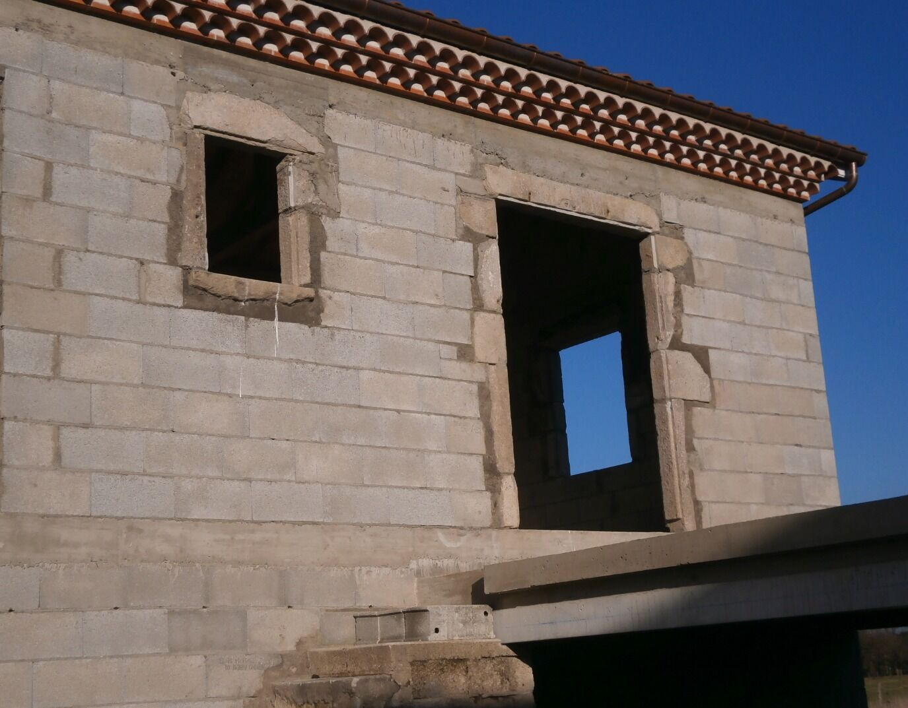
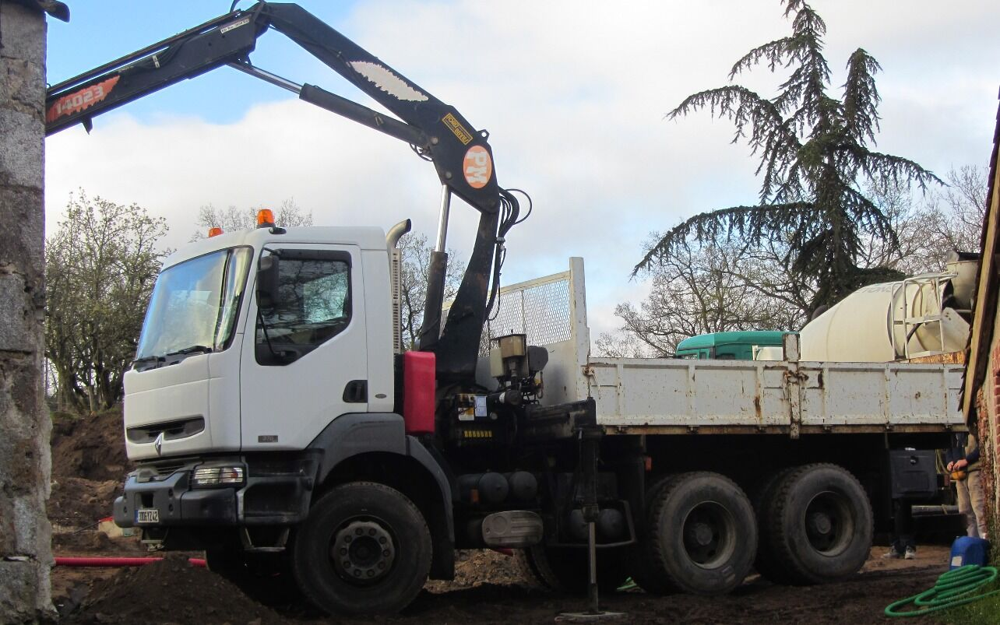
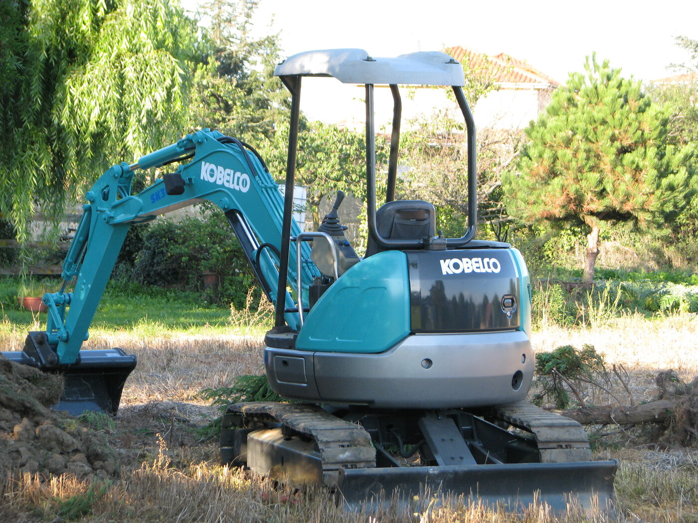
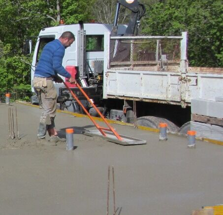
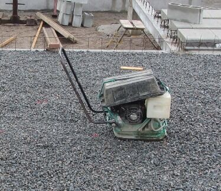
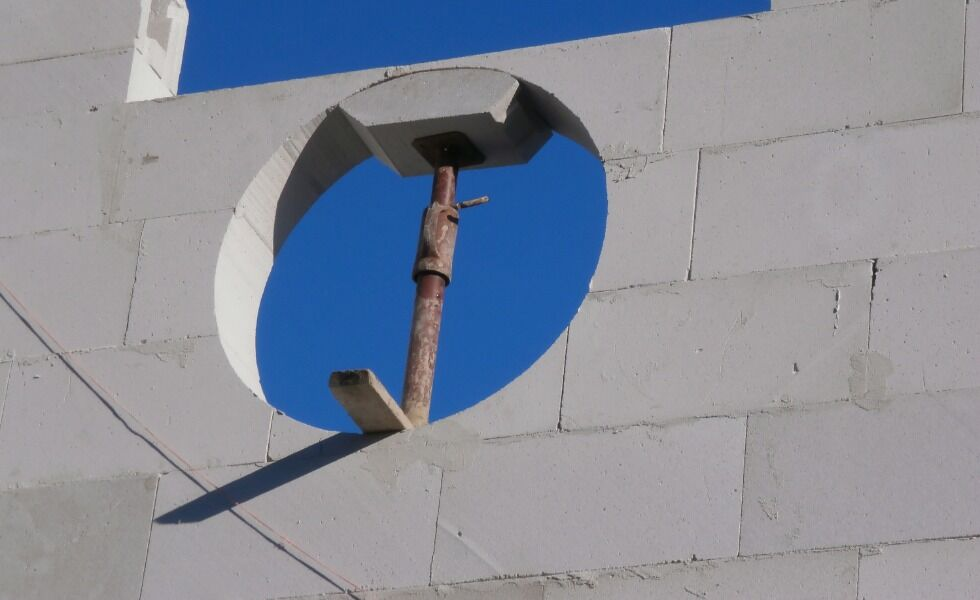
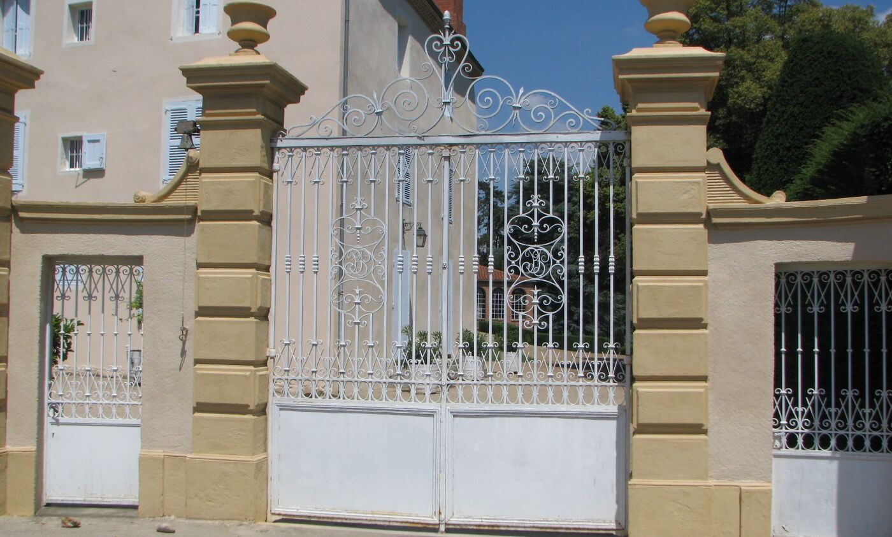

Visibilité locale
Mettre Montbrison et les environs au premier plan, avec des repères simples dès l'arrivée.

Artisan maçon · Montbrison (42)
Construction neuve, rénovation, agrandissement : de la fondation à l'enduit, un seul interlocuteur qui vient voir votre terrain avant de chiffrer.
00 / Objectif
Une présentation claire pour aider les personnes qui cherchent un maçon à comprendre votre métier et à passer à l'action.
Mettre Montbrison et les environs au premier plan, avec des repères simples dès l'arrivée.
Donner à voir les chantiers, les matériaux et les gestes qui construisent la confiance.
Faire émerger le téléphone et la demande de devis au bon moment, sans détour.
Consulter les services et appeler facilement, sur chantier comme à la maison.
01 / Métiers
Maisons individuelles, villas, bâtiments industriels : fondations, élévation des murs, dalles.
Modifier, ouvrir, agrandir l'existant sans le fragiliser.
Les petits chantiers comptent aussi, et sont faits avec le même soin.
02 / Matériaux
L'entreprise maîtrise les matériaux traditionnels comme les plus récents. Choisissez-en un pour le découvrir.
La pierre de nos anciennes maisons du Forez. Montée à la main, elle donne des murs épais et un cachet qu'on ne fabrique pas.
Le bloc béton, rapide à monter et économique : la base de la plupart des constructions neuves et des murs de clôture.
Une brique épaisse et alvéolée qui isole à elle seule. Elle se découpe sur place, à la scie sur table, pour des murs précis.
Léger, isolant, facile à façonner : on peut y tailler des formes, comme des ouvertures en arc.
La terre crue compactée, très présente dans les maisons anciennes de la région. Elle demande de connaître ses règles pour la rénover sans l'abîmer.
Du béton coulé entre des coffrages : pour des murs très résistants, des soubassements et des ouvrages porteurs.
La dernière couche, celle qu'on voit. Appliqué à la machine à projeter, il protège les murs et finit la façade.
03 / Méthode
Un premier rendez-vous chez vous, avant tout devis, pour voir le terrain ou le bâtiment tel qu'il est.
L'avis d'un artisan expérimenté sur votre projet : matériaux, faisabilité, points d'attention.
Un devis précis, établi à partir de ce qui a été vu sur place.
Matériaux livrés et déchargés au camion grue : pas d'attente, le chantier avance.
04 / Parc matériel






Photos : site actuel de l'entreprise (thinet-roger-constructions.com)
05 / Présentation
Cette proposition de site est un concept de prospection, pensé pour donner une direction concrète à votre présence en ligne.
Tout reste à valider avec l'entreprise avant une éventuelle mise en ligne.
Échangeons sur le concept05 / Contact
Décrivez votre projet au téléphone : on convient d'un rendez-vous sur place pour établir le devis.